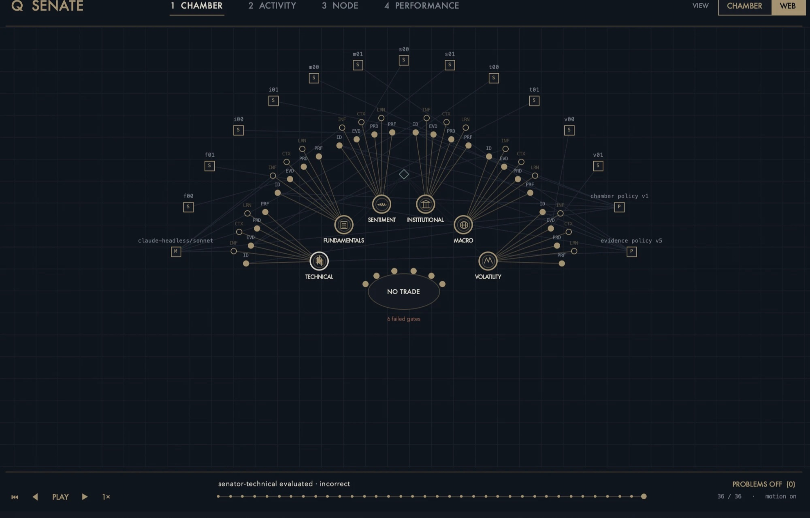
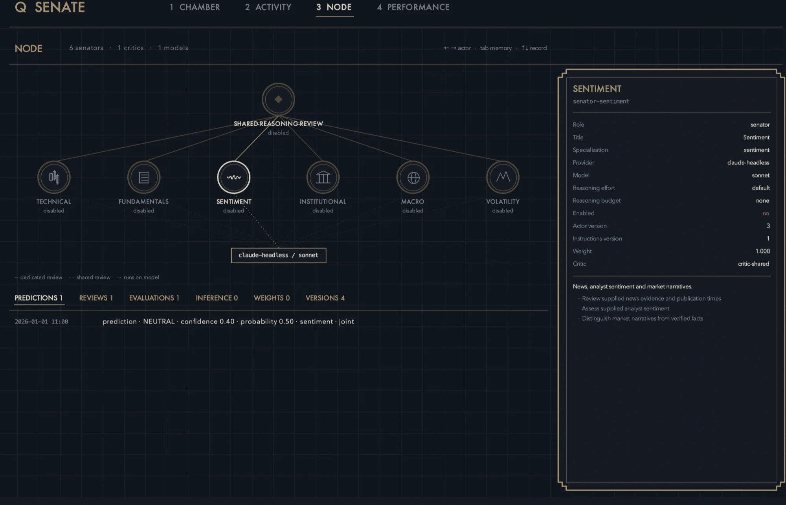
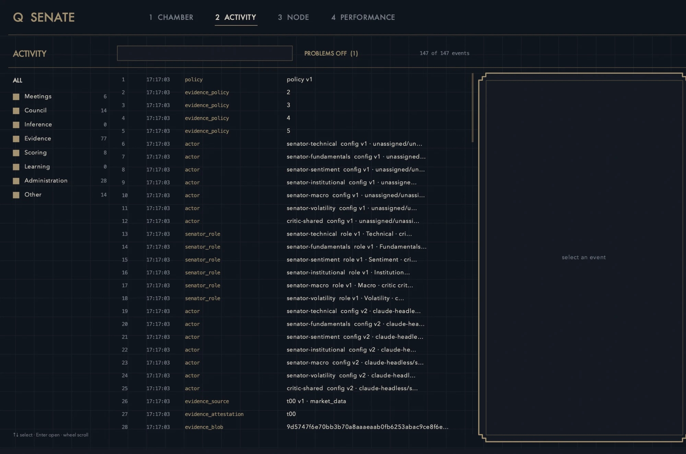

Software · Q ecosystem · AI systems design · Python
Senate
A decision council for AI models: specialist "senators" propose, critics challenge, and deterministic Python code decides, records, and scores the outcome, so no single model's confidence can overrule the evidence. Built offline and tested with synthetic data; no agents are active yet.
Demo
Interface






Problem
A single language model asked for a decision will sound confident whether or not it is right, and it cannot reliably grade itself. I wanted a structure where different specialists look at the same evidence, other agents attack their reasoning, and the final decision and the scoring come from transparent rules, not from any model's say-so.
What I did
Designed and specified Senate: identities, memory, and instructions belong to the council, not to any model or provider, so a senator can be moved between models without losing its history. Senators propose, critics challenge, Python decides and measures, and learning is controlled by me.
My role: I design the architecture and rules, write the specifications, approve each build step, and verify results. AI coding agents write much of the code under those rules.
How
- Six role-specialist senators (Technical, Fundamentals, Sentiment, Institutional, Macro, Volatility), each with a written role contract and instructions, plus critics that review each prediction.
- Pipeline: senator predictions, critic reviews, immutable revisions, a Chamber decision, a supplied outcome, an evaluator, identity histories, hypotheses, and owner-validated instruction changes.
- Deterministic core: consensus, empirical probability, and expected net return are kept independent, and missing data or failed gates produce NO TRADE. Senators and critics cannot change governance, scores, weights, or active instructions.
- Evidence validation: unsupported claims are rejected before voting, so each role may only use evidence relevant to it.
- Model-agnostic gateway: bounded adapters for hosted models and local models, where hosted calls need per-call opt-in and no autonomous hosted loop is authorized.
- Engineering choices: Python standard library only, with no dependencies or services, SQLite as the authoritative record, versioned configuration, and a module checklist updated with every build change.
Results
- A working offline council: strict records, six role definitions, archives, versioned configuration, voting and scoring, owner-reviewed learning, and bounded weight adjustments, exercised end to end with synthetic tests.
- A read-only dashboard that replays an acceptance run step by step (36 recorded steps in the replay shown) and shows every event and every senator's record.
- The fail-safe behaves as designed: the replayed run correctly outputs NO TRADE when six gates fail.
- Honest status: scaffold with code. All senators are disabled, no live agent has been run, and its value as a decision aid has not been measured.